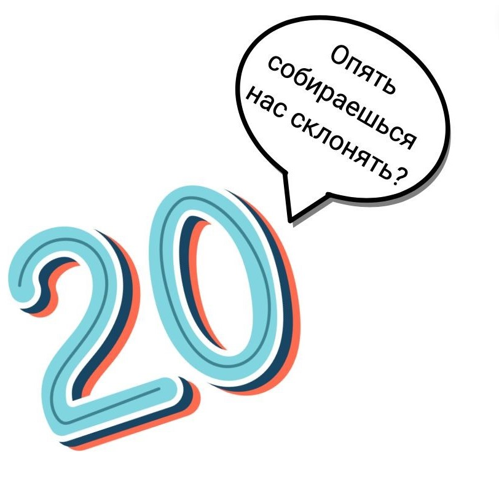
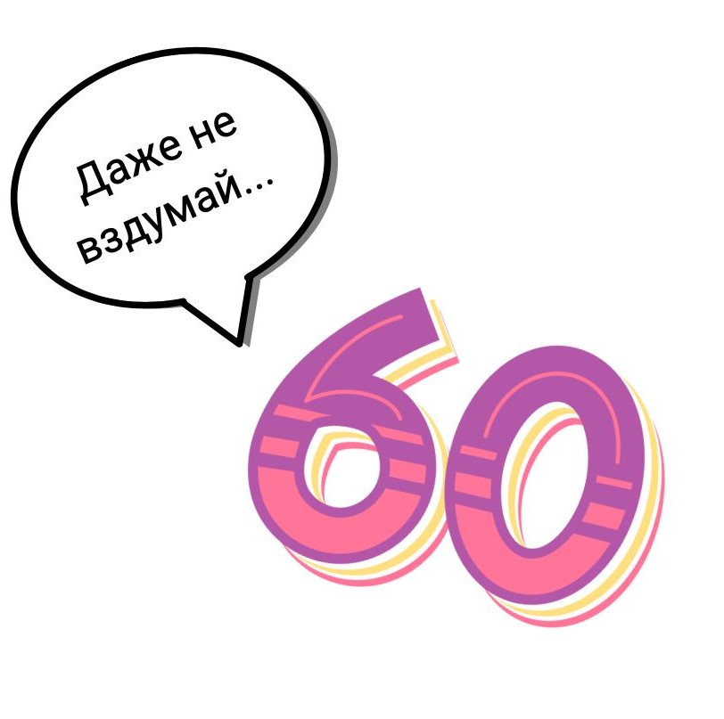
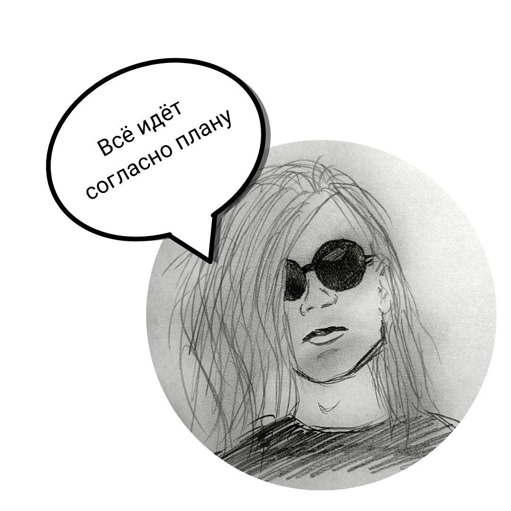

Частые ошибки в русском языке и как их избежать
Все мы ошибаемся, и это нормально.
Ещё со времен школы учителя говорят о важности “великого и могучего”,
но то и дело встречаются ошибки в деловых письмах, сообщениях, да и просто в разговоре.
Разберемся, в каких случаях ошибаемся чаще всего и как это можно исправить.
Анастасия Дабысова
Учитель русского языка и репетитор
Ошибки в ударениях
Как часто вы слышали от других “ква́ртал”, “зво́нит”, “торты́”, “ба́ловать”?
А может, сами так говорите? Мы можем ошибаться в ударениях и даже не замечать этого.
Дело в том, что ударение в русском языке подвижно: оно может падать на любое место в слове.
А еще нормы постоянно меняются.
Бывает так, что вчера вариант произношения был ошибочным, сегодня становится допустимым,
а завтра вообще единственно верным.
Как всё это запомнить? Никак, но многих ошибок можно избежать.
В русском языке есть некоторые закономерности, благодаря которым можно запомнить,
куда всё-таки падает ударение.
Например, в глаголах женского рода в прошедшем времени ударение падает на окончание
(брала́, ждала́, рвала́, назвала́).
Но и тут не обойтись без исключений: кла́ла, кра́ла, сла́ла.
В остальных формах прошедшего времени ударение остаётся на том же месте, что и в начальной форме
(сказа́ть - сказа́л, бра́ть - бра́ли, жда́ть - жда́ло). А ещё есть забавные стишки-запоминалки.
Они помогут запомнить ударение в словах, в которых чаще всего ошибаются.
10 запоминалок самых коварных слов
Мы прошли немало - целых два кварта́ла.
А у нашей Марфы все в полоску ша́рфы!
Мы у тёти Фёклы ели суп из свёклы.
Шторы нам не привози, мы закажем жалюзи́.
Срубили ель, сорвали щаве́ль.
Долго ели то́рты — не налезли шорты.
Для строителей в момент привезет шофер цеме́нт.
В чистоте чтоб жил народ, придуман мусоропрово́д.
Ба́рмен поместил в свой блог самый полный катало́г.
Красит стены нам маляр. Полки делает столя́р.
А у нашей Марфы все в полоску ша́рфы!
Мы у тёти Фёклы ели суп из свёклы.
Шторы нам не привози, мы закажем жалюзи́.
Срубили ель, сорвали щаве́ль.
Долго ели то́рты — не налезли шорты.
Для строителей в момент привезет шофер цеме́нт.
В чистоте чтоб жил народ, придуман мусоропрово́д.
Ба́рмен поместил в свой блог самый полный катало́г.
Красит стены нам маляр. Полки делает столя́р.
Ошибки в употреблении паронимов
Паронимы – это слова, которые в произношении похожи, а по смыслу разные.
Зачастую они становятся причиной смысловых ошибок.
Слово вроде и подходит, но значение оказывается другим.
И если с “одеть” – “надеть” еще можно разобраться, то от “оплатить – уплатить” дёргается глаз.
С паронимами бывают и просто смешные ситуации:
‘‘ Чичиков придумал эффектный бизнес-план по скупке мёртвых душ.
Эффектно, и не поспоришь. Но бизнес всё-таки эффективный.
Итак, разбираемся, почему нельзя “поставить роспись”.
Подпись – собственноручно написанная фамилия или имя; надпись на чём-то.
Подпись в документе.
Роспись – живопись на стенах, потолках или посуде.
Роспись в Сикстинской капелле, жостовская роспись.
Подпись в документе.
Роспись – живопись на стенах, потолках или посуде.
Роспись в Сикстинской капелле, жостовская роспись.
Оплатить (что-то ) – то, за что платят.
Оплатить учёбу, услуги.
Уплатить (что; за что) – то, что платят.
Уплатить штраф, взнос, пени.
Оплатить учёбу, услуги.
Уплатить (что; за что) – то, что платят.
Уплатить штраф, взнос, пени.
Различать – распознавать зрением или другими органами чувств.
Различать голос, оттенки цветов.
Отличать – распознавать что-то среди другого.
Отличать оригинал от копии, латте от капучино.
Различать голос, оттенки цветов.
Отличать – распознавать что-то среди другого.
Отличать оригинал от копии, латте от капучино.
Как не допускать ошибок?
Если сомневаетесь в правильности употребления слова, загляните в словарь паронимов или в толковый.
Вдумайтесь в слово и в смысл фразы.
Если всё еще сомневаетесь, попробуйте подобрать синоним или переделать предложение так,
чтобы все слова были вам понятны.
Ошибки в склонении числительных
Иногда числительные приходится произносить вслух, причём в разных формах.
И тут начинается интересное: “двумстам” или “двустам”, “трёхста” или “трёхсот”?
В изменении числительных по падежам ошибаются даже образованные люди.
Разберёмся, что к чему.
Как не ошибиться С числительными, которые оканчиваются на -сот, всегда возникают проблемы.
Такие числительные забывают изменять, а если и изменяют, то тоже ошибаются.
Чтобы было проще, поделите число на две части: триста = три и сто.
Попробуем поставить число 300 в родительный падеж.
Первую часть изменяем как обычно, три = трёх, а вторую часть изменяем как слово НОТЫ, нот=сот.
Соединяем: трёх+сот = трёхсот.
А теперь попробуем поставить в творительный падеж (кем?чем?): три = тремя, нотами = стами. Тремя + стами = тремястами. Правило “НОТЫ” упростит вам изменение числительных.
А теперь попробуем поставить в творительный падеж (кем?чем?): три = тремя, нотами = стами. Тремя + стами = тремястами. Правило “НОТЫ” упростит вам изменение числительных.


Как не ошибиться? Здесь всё просто.
Числительные 40, 90 и 100 имеют только две формы: в именительном падеже - сорок, девяносто и сто,
а во всех остальных падежах – сорока, девяноста, ста.
Ошибка в употреблении предлогов с существительными
Не говорите, что вы что-то сделаете “по приезду” или “по прилёту” куда-то, ведь это неграмотно.
Разберёмся, как правильно.
Как не ошибиться? Если предлог “по” имеет значение “после чего-либо”,
то существительное после него ставим в предложный падеж (о ком? о чём?).
По окончании, по возвращении, по завершении. Не беспокойтесь, стадия принятия уже где-то близко.
И да, русский язык беспощаден, согласны.

Неправильное употребление существительных во множественном числе
Со множественным числом иногда возникают трудности.
Вспомните, в магазине вы покупаете “килограмм помидоров” или “килограмм помидор”?
Если выбрали второй вариант, то давайте скорее разбираться, чтобы стать самым грамотным в очереди :)
Как не ошибиться? Всё просто: названия фруктов и овощей, которые оканчиваются на твёрдый согласный (помидор, апельсин), в родительном падеже множественного числа будут оканчиваться на -ов.
Как не ошибиться? Принцип такой: обычно всё, что обуваем или надеваем на ноги во множественном числе имеет нулевое окончание.
Почему “доктора”, но “тренеры”? “Директора”, но “редакторы”?
Почему “доктора”, но “тренеры”? “Директора”, но “редакторы”?
Как не ошибиться? Многие существительные с твёрдым согласным на конце в форме множественного числа оканчиваются на -ы.
Это литературная норма.
Запомнить следует только несколько слов: “доктора”, “директора”, “профессора”.
Как повысить грамотность и предотвратить ошибки?.
 Читайте качественную литературу. Обращайте внимание на язык автора, написание слов и знаки препинания.
Читайте качественную литературу. Обращайте внимание на язык автора, написание слов и знаки препинания.
Проверяйте себя на авторитетных сайтах и в словарях. Например, на сайте gramota.ru Сохраните в телефоне несколько словарей.
Сокращайте предложения. Чем они длиннее, тем выше шанс ошибки. Короткие предложения помогают выразить мысль четко и понятно.
Слушайте аудиокниги. Если нет времени читать обычные. Аудиокниги тоже пополняют словарный запас, а интонация диктора поможет разобраться в пунктуации.
Обращайтесь к правилам русского языка. Не поленитесь иной раз погуглить, как пишется слово, где нужна запятая, а где нет.